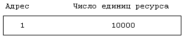
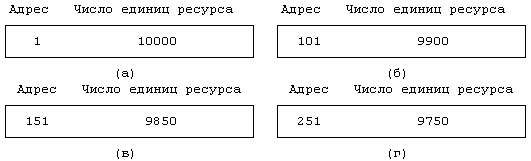
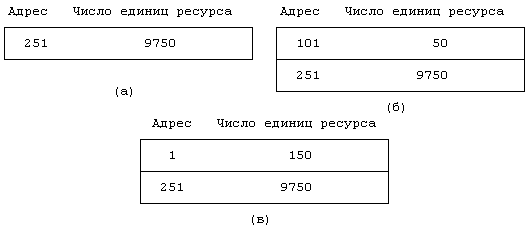
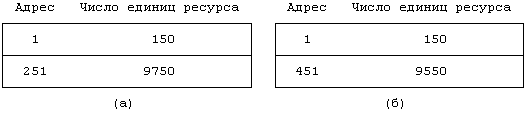
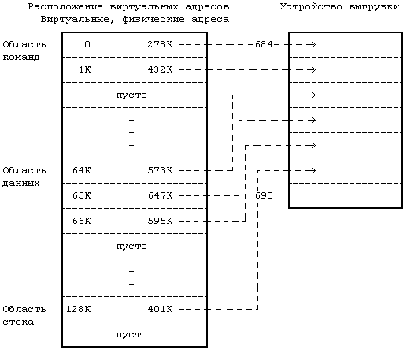
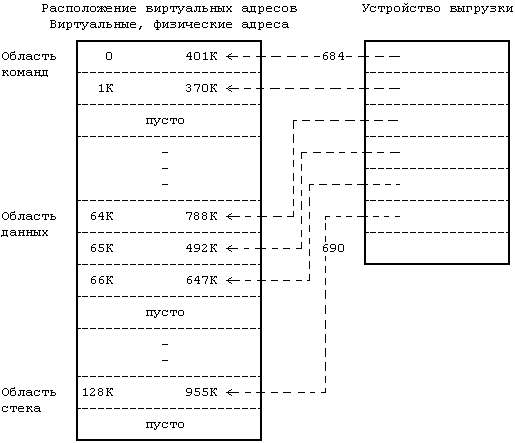
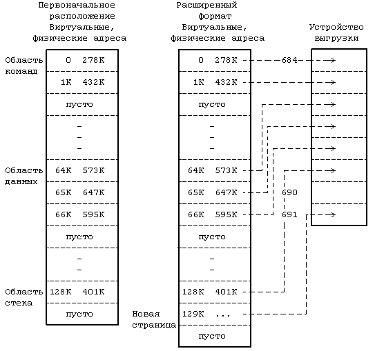
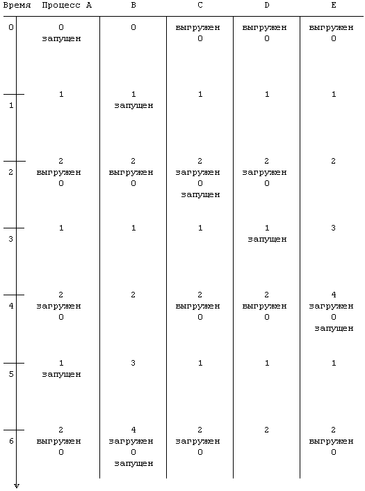
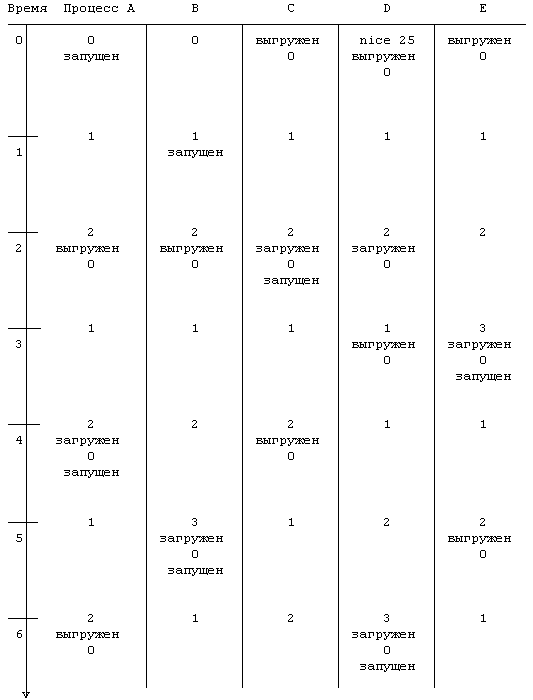

Описание алгоритма свопинга можно разбить на три части: управление пространством на устройстве выгрузки, выгрузка процессов из основной памяти и подкачка процессов в основную память.
Устройство выгрузки является устройством блочного типа, которое представляет собой конфигурируемый раздел диска. Тогда как обычно ядро выделяет место для файлов по одному блоку за одну операцию, на устройстве выгрузки пространство выделяется группами смежных блоков. Пространство, выделяемое для файлов, используется статическим образом; поскольку схема назначения пространства под файлы действует в течение длительного периода времени, ее гибкость понимается в смысле сокращения числа случаев фрагментации и, следовательно, объемов неиспользуемого пространства в файловой системе. Выделение пространства на устройстве выгрузки, напротив, является временным, в сильной степени зависящим от механизма диспетчеризации процессов. Процесс, размещаемый на устройстве выгрузки, в конечном итоге вернется в основную память, освобождая место на внешнем устройстве. Поскольку время является решающим фактором и с учетом того, что ввод-вывод данных за одну мультиблочную операцию происходит быстрее, чем за несколько одноблочных операций, ядро выделяет на устройстве выгрузки непрерывное пространство, не беря во внимание возможную фрагментацию.
Так как схема выделения пространства на устройстве выгрузки отличается от схемы, используемой для файловых систем, структуры данных, регистрирующие свободное пространство, должны также отличаться. Пространство, свободное в файловых системах, описывается с помощью связного списка свободных блоков, доступ к которому осуществляется через суперблок файловой системы, информация о свободном пространстве на устройстве выгрузки собирается в таблицу, именуемую "карта памяти устройства". Карты памяти, помимо устройства выгрузки, используются и другими системными ресурсами (например, драйверами некоторых устройств), они дают возможность распределять память устройства (в виде смежных блоков) по методу первого подходящего.
Каждая строка в карте памяти состоит из адреса распределяемого ресурса и количества доступных единиц ресурса; ядро интерпретирует элементы строки в соответствии с типом карты. В самом начале карта памяти состоит из одной строки, содержащей адрес и общее количество ресурсов. Если карта описывает распределение памяти на устройстве выгрузки, ядро трактует каждую единицу ресурса как группу дисковых блоков, а адрес - как смещение в блоках от начала области выгрузки. Первоначальный вид карты памяти для устройства выгрузки, состоящего из 10000 блоков с начальным адресом, равным 1, показан на Рисунке 9.1. Выделяя и освобождая ресурсы, ядро корректирует карту памяти, заботясь о том, чтобы в ней постоянно содержалась точная информация о свободных ресурсах в системе.
На Рисунке 9.2 представлен алгоритм выделения пространства с помощью карт памяти (malloc). Ядро просматривает карту в поисках первой строки, содержащей количество единиц ресурса, достаточное для удовлетворения запроса. Если запрос покрывает все количество единиц, содержащееся в строке, ядро удаляет строку и уплотняет карту (то есть в карте становится на одну строку меньше). В противном случае ядро переустанавливает адрес и число оставшихся единиц в строке в соответствии с числом единиц, выделенных по запросу. На Рисунке 9.3 показано, как меняется вид карты памяти для устройства выгрузки после выделения 100, 50 и вновь 100 единиц ресурса. В конечном итоге карта памяти принимает вид, показывающий, что первые 250 единиц ресурса выделены по запросам, и что теперь остались свободными 9750 единиц, начиная с адреса 251.

Рисунок 9.1. Первоначальный вид карты памяти для устройства выгрузки
алгоритм malloc /* алгоритм выделения пространства с ис-
пользованием карты памяти */
входная информация: (1) адрес /* указывает на тип ис-
пользуемой карты */
(2) требуемое число единиц ресурса
выходная информация: адрес - в случае успешного завершения
0 - в противном случае
{
для (каждой строки карты)
{
если (требуемое число единиц ресурса располагается в
строке карты)
{
если (требуемое число == числу единиц в строке)
удалить строку из карты;
в противном случае
отрегулировать стартовый адрес в строке;
вернуть (первоначальный адрес строки);
}
}
вернуть (0);
}
|
Рисунок 9.2. Алгоритм выделения пространства с помощью карт памяти
Освобождая ресурсы, ядро ищет для них соответствующее место в карте по адресу. При этом возможны три случая:
- Освободившиеся ресурсы полностью закрывают пробел в карте памяти. Другими словами, они имеют смежные адреса с адресами ресурсов из строк, непосредственно предшествующей и следующей за данной. В этом случае ядро объединяет вновь освободившиеся ресурсы с ресурсами из указанных строк в одну строку карты памяти.
- Освободившиеся ресурсы частично закрывают пробел в карте памяти. Если они имеют адрес, смежный с адресом ресурсов из строки, непосредственно предшествующей или непосредственно следующей за данной (но не с адресами из обеих строк), ядро переустанавливает значение адреса и числа ресурсов в соответствующей строке с учетом вновь освободившихся ресурсов. Число строк в карте памяти остается неизменным.
- Освободившиеся ресурсы частично закрывают пробел в карте памяти, но их адреса не соприкасаются с адресами каких-либо других ресурсов карты. Ядро создает новую строку и вставляет ее в соответствующее место в карте.

Рисунок 9.3. Выделение пространства на устройстве выгрузки
Возвращаясь к предыдущему примеру, отметим, что если ядро освобождает 50 единиц ресурса, начиная с адреса 101, в карте памяти появится новая строка, поскольку освободившиеся ресурсы имеют адреса, не соприкасающиеся с адресами существующих строк карты. Если же затем ядро освободит 100 единиц ресурса, начиная с адреса 1, первая строка карты будет расширена, поскольку освободившиеся ресурсы имеют адрес, смежный с адресом первой строки. Эволюция состояний карты памяти для данного случая показана на Рисунке 9.4.
Предположим, что ядру был сделан запрос на выделение 200 единиц (блоков) пространства устройства выгрузки. Поскольку первая строка карты содержит информацию только о 150 единицах, ядро привлекает для удовлетворения запроса информацию из второй строки (см. Рисунок 9.5). Наконец, предположим, что ядро освобождает 350 единиц пространства, начиная с адреса 151. Несмотря на то, что эти 350 единиц были выделены ядром в разное время, не существует причины, по которой ядро не могло бы освободить их все сразу. Ядро узнает о том, что освободившиеся ресурсы полностью закрывают разрыв между первой и второй строками карты, и вместо прежних двух создает одну строку, в которую включает и освободившиеся ресурсы.

Рисунок 9.4. Освобождение пространства на устройстве выгрузки

Рисунок 9.5. Выделение пространства на устройстве выгрузки,
описанного во второй строке карты памяти
В традиционной реализации системы UNIX используется одно устройство выгрузки, однако в последних редакциях версии V допускается уже наличие множества устройств выгрузки. Ядро выбирает устройство выгрузки по схеме "кольцевого списка" при условии, что на устройстве имеется достаточный объем непрерывного адресного пространства. Администраторы могут динамически создавать и удалять из системы устройства выгрузки. Если устройство выгрузки удаляется из системы, ядро не выгружает данные на него; если же данные подкачиваются с удаляемого устройства, сначала оно опорожняется и только после освобождения принадлежащего устройству пространства устройство может быть удалено из системы.
Ядро выгружает процесс, если испытывает потребность в свободной памяти, которая может возникнуть в следующих случаях:
- Произведено обращение к системной функции fork, которая должна выделить место в памяти для процесса-потомка.
- Произведено обращение к системной функции brk, увеличивающей размер процесса.
- Размер процесса увеличился в результате естественного увеличения стека процесса.
- Ядру нужно освободить в памяти место для подкачки ранее выгруженных процессов.
Обращение к системной функции fork выделено в особую ситуацию, поскольку это единственный случай, когда пространство памяти, ранее занятое процессом (родителем), не освобождается.
Когда ядро принимает решение о том, что процесс будет выгружен из основной памяти, оно уменьшает значение счетчика ссылок, ассоциированного с каждой областью процесса, и выгружает те области, у которых счетчик ссылок стал равным 0. Ядро выделяет место на устройстве выгрузки и блокирует процесс в памяти (в случаях 1-3), запрещая его выгрузку (см. упражнение 9.12) до тех пор, пока не закончится текущая операция выгрузки. Адрес места выгрузки областей ядро сохраняет в соответствующих записях таблицы областей.
За одну операцию ввода-вывода, в которой участвуют устройство выгрузки и адресное пространство задачи и которая осуществляется через буферный кеш, ядро выгружает максимально-возможное количество данных. Если аппаратура не в состоянии передать за одну операцию содержимое нескольких страниц памяти, перед программами ядра встает задача осуществить передачу содержимого памяти за несколько шагов по одной странице за каждую операцию. Таким образом, точная скорость и механизм передачи данных определяются, помимо всего прочего, возможностями дискового контроллера и стратегией распределения памяти. Например, если используется страничная организация памяти, существует вероятность, что выгружаемые данные занимают несмежные участки физической памяти. Ядро обязано собирать информацию об адресах страниц с выгружаемыми данными, которую впоследствии использует дисковый драйвер, осуществляющий управление процессом ввода-вывода. Перед тем, как выгрузить следующую порцию данных, программа подкачки (выгрузки) ждет завершения предыдущей операции ввода-вывода.
При этом перед ядром не встает задача переписать на устройство выгрузки содержимое виртуального адресного пространства процесса полностью. Вместо этого ядро копирует на устройство выгрузки содержимое физической памяти, отведенной процессу, игнорируя неиспользуемые виртуальные адреса. Когда ядро подкачивает процесс обратно в память, оно имеет у себя карту виртуальных адресов процесса и может переназначить процессу новые адреса. Ядро считывает копию процесса из буферного кеша в физическую память, в те ячейки, для которых установлено соответствие с виртуальными адресами процесса.
На Рисунке 9.6 приведен пример отображения образа процесса в памяти на адресное пространство устройства выгрузки (*). Процесс располагает тремя областями: команд, данных и стека. Область команд заканчивается на виртуальном адресе 2К, а область данных начинается с адреса 64К, таким образом в виртуальном адресном пространстве образовался пропуск в 62 Кбайта. Когда ядро выгружает процесс, оно выгружает содержимое страниц памяти с адресами 0, 1К, 64К, 65К, 66К и 128К; на устройстве выгрузки не будет отведено место под пропуск в 62 Кбайта между областями команд и данных, как и под пропуск в 61 Кбайт между областями данных и стека, ибо пространство на устройстве выгрузки заполняется непрерывно. Когда ядро загружает процесс обратно в память, оно уже знает из карты памяти процесса о том, что процесс имеет в своем пространстве неиспользуемый участок размером 62К, и с учетом этого соответственно выделяет физическую память. Этот случай проиллюстрирован с помощью Рисунка 9.7. Сравнение Рисунков 9.6 и 9.7 показывает, что физические адреса, занимаемые процессом до и после выгрузки, не совпадают между собой; однако, на пользовательском уровне процесс не обращает на это никакого внимания, поскольку содержимое его виртуального пространства осталось тем же самым.
Теоретически все пространство памяти, занятое процессом, в том числе его личное адресное пространство и стек ядра, может быть выгружено, хотя ядро и может временно заблокировать область в памяти на время выполнения критической операции. Однако практически, ядро не выгружает содержимое адресного пространства процесса, если в нем находятся таблицы преобразования адресов (адресные таблицы) процесса. Практическими соображениями так же диктуются условия, при которых процесс может выгрузить самого себя или потребовать своей выгрузки другим процессом (см. упражнение 9.4).

Рисунок 9.6. Отображение пространства процесса на устройство выгрузки

Рисунок 9.7. Загрузка процесса в память
9.1.2.1 Выгрузка при выполнении системной функции fork
В описании системной функции fork (раздел 7.1) предполагалось, что процесс-родитель получил в свое распоряжение память, достаточную для создания контекста потомка. Если это условие не выполняется, ядро выгружает процесс из памяти, не освобождая пространство памяти, занимаемое его (родителя) копией. Когда процедура выгрузки завершится, процесс-потомок будет располагаться на устройстве выгрузки; процесс-родитель переводит своего потомка в состояние "готовности к выполнению" (см. Рисунок 6.1) и возвращается в режим задачи. Поскольку процесс-потомок находится в состоянии "готовности к выполнению", программа подкачки в конце концов загрузит его в память, где ядро запустит его на выполнение; потомок завершит тем самым свою роль в выполнении системной функции fork и вернется в режим задачи.
9.1.2.2 Выгрузка с расширением
Если процесс испытывает потребность в дополнительной физической памяти, либо в результате расширения стека, либо в результате запуска функции brk, и если эта потребность превышает доступные резервы памяти, ядро выполняет операцию выгрузки процесса с расширением его размера на устройстве выгрузки. На устройстве выгрузки ядро резервирует место для размещения процесса с учетом расширения его размера. Затем производится перенастройка таблицы преобразования адресов процесса с учетом дополнительного виртуального пространства, но без выделения физической памяти (в связи с ее отсутствием). Наконец, ядро выгружает процесс, выполняя процедуру выгрузки обычным порядком и обнуляя вновь выделенное пространство на устройстве (см. Рисунок 9.8). Когда несколько позже ядро будет загружать процесс обратно в память, физическое пространство будет выделено уже с учетом нового состояния таблицы преобразования адресов. В момент возобновления у процесса уже будет в распоряжении память достаточного объема.

Рисунок 9.8. Перенастройка карты памяти в случае выгрузки с расширением
Нулевой процесс (процесс подкачки) является единственным процессом, загружающим другие процессы в память с устройств выгрузки. Процесс подкачки начинает работу по выполнению этой своей единственной функции по окончании инициализации системы (как уже говорилось в разделе 7.9). Он загружает процессы в память и, если ему не хватает места в памяти, выгружает оттуда некоторые из процессов, находящихся там. Если у процесса подкачки нет работы (например, отсутствуют процессы, ожидающие загрузки в память) или же он не в состоянии выполнить свою работу (ни один из процессов не может быть выгружен), процесс подкачки приостанавливается; ядро периодически возобновляет его выполнение. Ядро планирует запуск процесса подкачки точно так же, как делает это в отношении других процессов, ориентируясь на более высокий приоритет, при этом процесс подкачки выполняется только в режиме ядра. Процесс подкачки не обращается к функциям операционной системы, а использует в своей работе только внутренние функции ядра; он является архетипом всех процессов ядра.
Как уже вкратце говорилось в главе 8, программа обработки прерываний по таймеру измеряет время нахождения каждого процесса в памяти или в состоянии выгрузки. Когда процесс подкачки возобновляет свою работу по загрузке процессов в память, он просматривает все процессы, находящиеся в состоянии "готовности к выполнению, будучи выгруженными", и выбирает из них один, который находится в этом состоянии дольше остальных (см. Рисунок 9.9). Если имеется достаточно свободной памяти, процесс подкачки загружает выбранный процесс, выполняя операции в последовательности, обратной выгрузке процесса. Сначала выделяется физическая память, затем с устройства выгрузки считывается нужный процесс и освобождается место на устройстве.
Если процесс подкачки выполнил процедуру загрузки успешно, он вновь просматривает совокупность выгруженных, но готовых к выполнению процессов в поисках следующего процесса, который предполагается загрузить в память, и повторяет указанную последовательность действий. В конечном итоге возникает одна из следующих ситуаций:
- На устройстве выгрузки больше нет ни одного процесса, готового к выполнению. Процесс подкачки приостанавливает свою работу до тех пор, пока не возобновится процесс на устройстве выгрузки или пока ядро не выгрузит процесс, готовый к выполнению. (Вспомним диаграмму состояний на Рисунке 6.1).
- Процесс подкачки обнаружил процесс, готовый к загрузке, но в системе недостаточно памяти для его размещения. Процесс подкачки пытается загрузить другой процесс и в случае успеха перезапускает алгоритм подкачки, продолжая поиск загружаемых процессов.
Если процессу подкачки нужно выгрузить процесс, он просматривает все процессы в памяти. Прекратившие свое существование процессы не подходят для выгрузки, поскольку они не занимают физическую память; также не могут быть выгружены процессы, заблокированные в памяти, например, выполняющие операции над областями. Ядро предпочитает выгружать приостановленные процессы, поскольку процессы, готовые к выполнению, имеют больше шансов быть вскоре выбранными на выполнение. Решение о выгрузке процесса принимается ядром на основании его приоритета и продолжительности его пребывания в памяти. Если в памяти нет ни одного приостановленного процесса, решение о том, какой из процессов, готовых к выполнению, следует выгрузить, зависит от значения, присвоенного процессу функцией nice, а также от продолжительности пребывания процесса в памяти.
Процесс, готовый к выполнению, должен быть резидентным в памяти в течение по меньшей мере 2 секунд до того, как уйти из нее, а процесс, загружаемый в память, должен по меньшей мере 2 секунды пробыть на устройстве выгрузки. Если процесс подкачки не может найти ни одного процесса, подходящего для выгрузки, или ни одного процесса, подходящего для загрузки, или ни одного процесса, перед выгрузкой не менее 2 секунд (**) находившегося в памяти, он приостанавливает свою работу по причине того, что ему нужно загрузить процесс в память, а в памяти нет места для его размещения. В этой ситуации таймер возобновляет выполнение процесса подкачки через каждую секунду. Ядро также возобновляет работу процесса подкачки в том случае, когда один из процессов переходит в состояние приостанова, так как последний может оказаться более подходящим для выгрузки процессом по сравнению с ранее рассмотренными. Если процесс подкачки расчистил место в памяти или если он был приостановлен по причине невозможности сделать это, он возобновляет свою работу с перезапуска алгоритма подкачки (с самого его начала), вновь предпринимая попытку загрузить ожидающие выполнения процессы.
алгоритм swapper /* загрузка выгруженных процессов,
* выгрузка других процессов с целью
* расчистки места в памяти */
входная информация: отсутствует
выходная информация: отсутствует
{
loop:
для (всех выгруженных процессов, готовых к выполнению)
выбрать процесс, находящийся в состоянии выгружен-
ности дольше остальных;
если (таких процессов нет)
{
приостановиться (до момента, когда возникнет необ-
ходимость в загрузке процессов);
перейти на loop;
}
если (в основной памяти достаточно места для размеще-
ния процесса)
{
загрузить процесс;
перейти на loop;
}
/* loop2: сюда вставляются исправления, внесенные в алго-
* ритм */
для (всех процессов, загруженных в основную память,
кроме прекративших существование и заблокированных в
памяти)
{
если (есть хотя бы один приостановленный процесс)
выбрать процесс, у которого сумма приоритета и
продолжительности нахождения в памяти наи-
большая;
в противном случае /* нет ни одного приостанов-
* ленного процесса */
выбрать процесс, у которого сумма продолжи-
тельности нахождения в памяти и значения nice
наибольшая;
}
если (выбранный процесс не является приостановленным
или не соблюдены условия резидентности)
приостановиться (до момента, когда появится воз-
можность загрузить процесс);
в противном случае
выгрузить процесс;
перейти на loop; /* на loop2 в исправленном алгорит-
* ме */
}
|
Рисунок 9.9. Алгоритм подкачки
На Рисунке 9.10 показана динамика выполнения пяти процессов с указанием моментов их участия в реализации алгоритма подкачки. Положим для простоты, что все процессы интенсивно используют ресурсы центрального процессора и что они не производят обращений к системным функциям; следовательно, переключение контекста происходит только в результате возникновения прерываний по таймеру с интервалом в 1 секунду. Процесс подкачки исполняется с наивысшим приоритетом планирования, поэтому он всегда укладывается в секундный интервал, когда ему есть что делать. Предположим далее, что процессы имеют одинаковый размер и что в основной памяти могут одновременно поместиться только два процесса. Сначала в памяти находятся процессы A и B, остальные процессы выгружены. Процесс подкачки не может стронуть с места ни один процесс в течение первых двух секунд, поскольку этого требует условие нахождения перемещаемого процесса в течение этого интервала на одном месте (в памяти или на устройстве выгрузки), однако по истечении 2 секунд процесс подкачки выгружает процессы A и B и загружает на их место процессы C и D. Он пытается также загрузить и процесс E, но терпит неудачу, поскольку в основной памяти недостаточно места для этого. На 3-секундной отметке процесс E все еще годен для загрузки, поскольку он находился все 3 секунды на устройстве выгрузки, но процесс подкачки не может выгрузить из памяти ни один из процессов, ибо они находятся в памяти менее 2 секунд. На 4-секундной отметке процесс подкачки выгружает процессы C и D и загружает вместо них процессы E и A.
Процесс подкачки выбирает процессы для загрузки, основываясь на продолжительности их пребывания на устройстве выгрузки. В качестве другого критерия может применяться более высокий приоритет загружаемого процесса по сравнению с остальными, готовыми к выполнению процессами, поскольку такой процесс более предпочтителен для запуска. Практика показала, что такой подход "несколько" повышает пропускную способность системы в условиях сильной загруженности (см. [Peachey 84]).
Алгоритм выбора процесса для выгрузки из памяти с целью освобождения места требуемого объема имеет, однако, более серьезные изъяны. Во-первых, процесс подкачки производит выгрузку на основании приоритета, продолжительности нахождения в памяти и значения nice. Несмотря на то, что он производит выгрузку процесса с единственной целью - освободить в памяти место для загружаемого процесса, он может выгрузить и процесс, который не освобождает место требуемого размера. Например, если процесс подкачки пытается загрузить в память процесс размером 1 Мбайт, а в системе отсутствует свободная память, будет далеко не достаточно выгрузить процесс, занимающий только 2 Кбайта памяти. В качестве альтернативы может быть предложена стратегия выгрузки групп процессов при условии, что они освобождают место, достаточное для размещения загружаемых процессов.Эксперименты с использованием машины PDP 11/23 показали,что в условиях сильной загруженности такая стратегия может увеличить производительность системы почти на 10 процентов (см. [Peachey 84]).
Во-вторых, если процесс подкачки приостановил свою работу изза того, что в памяти не хватило места для загрузки процесса, после возобновления он вновь выбирает процесс для загрузки в память, несмотря на то, что ранее им уже был сделан выбор. Причина такого поведения заключается в том, что за прошедшее время в состояние готовности к выполнению могли перейти другие выгруженные процессы, более подходящие для загрузки в память по сравнению с ранее выбранным процессом. Однако от этого мало утешения для ранее выбранного процесса, все еще пытающегося загрузиться в память. В некоторых реализациях процесс подкачки стремится к тому, чтобы перед загрузкой в память одного крупного процесса выгрузить большое количество процессов маленького размера, это изменение в базовом алгоритме подкачки отражено в комментариях к алгоритму (Рисунок 9.9).
В-третьих, если процесс подкачки выбирает для выгрузки процесс, находящийся в состоянии "готовности к выполнению", не исключена возможность того, что этот процесс после загрузки в память ни разу не был запущен на исполнение. Этот случай показан на Рисунке 9.11, из которого видно, что ядро загружает процесс D на 2- секундной отметке, запускает процесс C, а затем на 3-секундной отметке процесс D выгружается в пользу процесса E (уступая последнему в значении nice), несмотря на то, что процессу D так и не был предоставлен ЦП. Понятно, что такая ситуация является нежелательной.
Следует упомянуть еще об одной опасности. Если при попытке выгрузить процесс на устройстве выгрузки не будет найдено свободное место, в системе может возникнуть тупиковая ситуация, при которой: все процессы в основной памяти находятся в состоянии приостанова, все готовые к выполнению процессы выгружены, для новых процессов на устройстве выгрузки уже нет места, нет свободного места и в основной памяти. Эта ситуация разбирается в упражнении 9.5. Интерес к проблемам, связанным с подкачкой процессов, в последние годы спал в связи с реализацией алгоритмов подкачки страниц памяти.

Рисунок 9.10. Последовательность операций, выполняемых процессом подкачки

Рисунок 9.11. Загрузка процессов в случае разбивки временных
интервалов на части
(*) Для простоты виртуальное адресное пространство процесса на этом и на всех последующих рисунках изображается в виде линейного массива точек входа в таблицу страниц, не принимая во внимание тот факт, что каждая область обычно имеет свою отдельную таблицу страниц.
(**) В версии 6 системы UNIX процесс не может быть выгружен из памяти с целью расчистки места для загружаемого процесса до тех пор, пока загружаемый процесс не проведет на диске 3 секунды. Уходящий из памяти процесс должен провести в памяти не менее 2 секунд. Временной интервал таким образом делится на части, в результате чего повышается производительность системы.
Предыдущая глава || Оглавление || Следующая глава
| |
{kind=link}